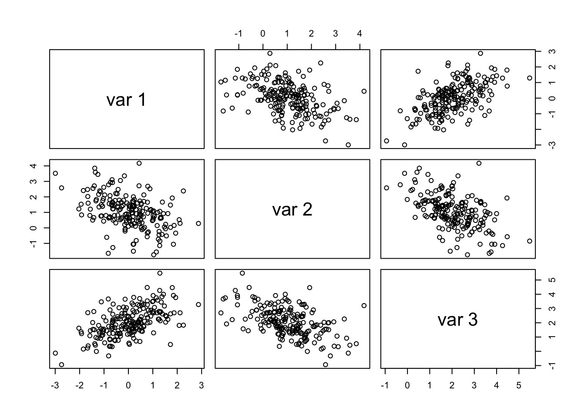
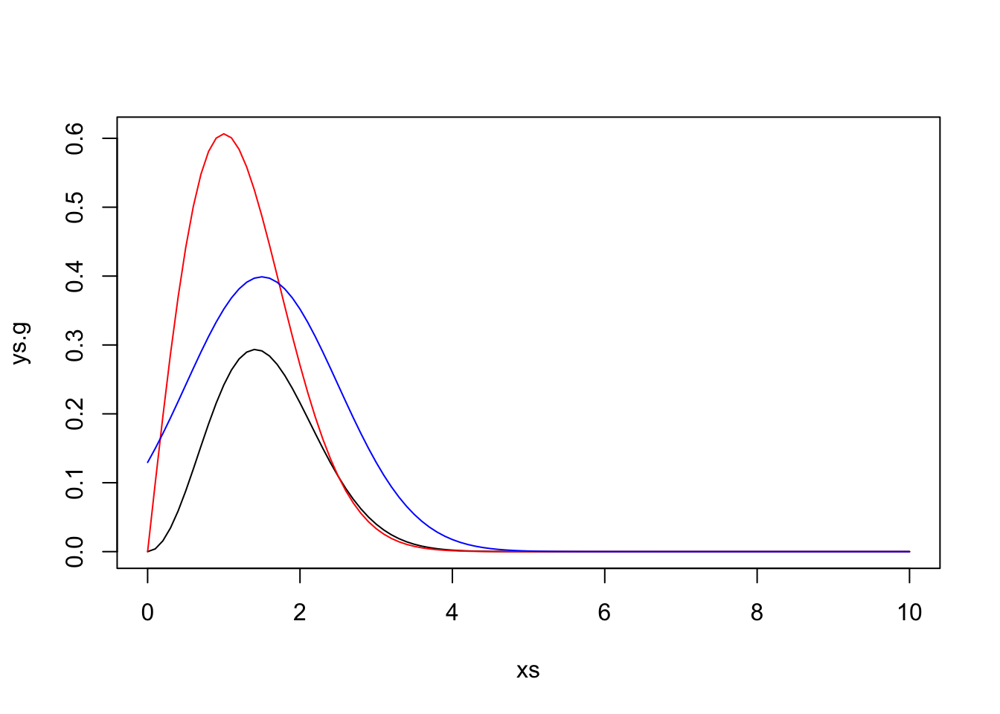

A discrete random variable X has probability mass function \[\begin{matrix}
x & 0 & 1 & 2 & 3 & 4 \\ \hline
f(x) & 0.1 & 0.2 & 0.2 & 0.2 & 0.3
\end{matrix}
\]
Use the inverse transform method to generate a random sample of size 1000 from the distribution of X. Construct a relative frequency table and compare the empirical with the theoretical probabilities. Repeat using the R sample function.
Solution
De acordo com o livro texto, “for each random variate required:
Generate a random \(u\) from \(Uniform(0,1)\).
Deliver \(x_{i}\) where \(F(x_{i−1}) < u ≤ F(x_{i})\).”
Assim, agregando algumas informações do livro, tem-se que:
n <-1000p <-c(0.1,0.2,0.2,0.2,0.3)u <-runif(n) x <-as.integer(u > p)se<-sqrt(p*(1-p)/n)round(rbind(table(x)/n, p, se),3)
Nos resultados acima, a primeira linha corresponde as frequências relativas da amostra, a segunda linha a distribuição teórica e a terceira ao erro padrão.
2) Acceptance-Rejection: Rizzo 3.7
Write a function to generate a random sample of size n from the \(Beta(a, b)\) distribution by the acceptance-rejection method. Generate a random sample of size 1000 from the \(Beta(3,2)\) distribution. Graph the histogram of the sample with the theoretical \(Beta(3,2)\) density superimposed.
Solution
n <-1000k <-0#counter for accepted j <-0#iterationsy <-numeric(n)while (k < n) {u <-runif(1)j <- j +1x <-runif(1) #random variate from g if (x * (1-x) > u) {#we accept x k <- k +1 y[k] <- x}}
Antes de partir para a comparação, nota-se que foram necessárias 5914 iterações para gerar 1000 variavéis Beta.
Assim como na questão anterior, nos resultados acima, a primeira linha corresponde as frequências relativas da amostra, a segunda linha a distribuição teórica e a terceira ao erro padrão.
3) Multivariate Normal: Rizzo 3.14
Generate 200 random observations from the 3-dimensional multivariate normal distribution having mean vector \(\mu = (0, 1, 2)\) and covariance matrix
using the Choleski factorization method. Use the R pairs plot to graph an array of scatter plots for each pair of variables.
For each pair of variables, 96 Statistical Computing with R (visually) check that the location and correlation approximately agree with the theoretical parameters of the corresponding bivariate normal distribution.
Solution
Seguindo o exemplo 3.18 do livro texto, tem-se que a função para o Método da Fatoração de Choleski para gerar amostras de Distribuição Normal N-Dimensional pode ser escrita por:
rmvn.Choleski <-function(n, mu, Sigma) {# generate n random vectors from MVN(mu, Sigma)# dimension is inferred from mu and Sigmad <-length(mu) Q <-chol(Sigma) # Choleski factorization of SigmaZ <-matrix(rnorm(n*d), nrow=n, ncol=d)X <- Z %*% Q +matrix(mu, n, d, byrow=TRUE)X}
Agora adicionando os dados informados no enunciado e rodando a função são geradas listas:
n <-200mu <-c(0,1,2)sigma <-matrix(c(1,-.5,.5,-.5,1,-.5,.5,-.5,1),nrow=3)x<-rmvn.Choleski(n,mu,sigma)head(x)
E então os gráficos de dispersão dos valores gerados são dados por:
pairs(x)

4) Antithetic Variables: Rizzo 5.6
In Example 5.7 the control variate approach was illustrated for Monte Carlo integration of \[θ = \int_{0}^{1} e^x dx.\] Now consider the antithetic variate approach.
Compute \(Cov(e^U , e^{1−U} )\) and \(Var(e^U + e^{1−U} )\), where \(U∼ Uniform(0,1)\). What is the percent reduction invariance of \(\theta\) that can be achieved using antithetic variates (compared with simple MC)?
Solution
No solutions
5) Importance Sampling: Rizzo 5.13, Rizzo 5.14 e Rizzo 5.15
Rizzo 5.13
Find two importance functions f1 and f2 that are supported on (1, ∞) and are ‘close’ to \[g(x) = \frac{x^2}{\sqrt 2 \pi} e^{−x^{2}/2}, \hspace{1cm} x>1\] Which of your two importance functions should produce the smaller variance in estimating \[\int_{1}^{\infty} \frac{x^2}{\sqrt 2 \pi} e^{−x^{2}/2} dx\] by importance sampling? Explain.
Solution
g =function (x) { x ^2/sqrt(2*pi) *exp(-x^2/2)}xs =seq(0,10,0.1)ys.g =g(xs)ys.rayleigh =drayleigh(xs)ys.norm =dnorm(xs, mean =1.5)lim =max(c(ys.g, ys.rayleigh, ys.norm))plot(xs, ys.g, type ="l", ylim =c(0, lim))lines(xs, ys.rayleigh, col="red", ylim =c(0, lim))lines(xs, ys.norm, col="blue", ylim =c(0, lim))

#f1(x) = drayleigh(x, sigma=1.5)#f2(x) = dnorm(x, mean = 1.5)# f2 is a little closer to g. should be better.
Rizzo 5.14
Obtain a Monte Carlo estimate of \[ \int_{1}^{\infty} \frac{x^2}{\sqrt 2 \pi} e^{−x^{2}/2} dx \] by importance sampling.
Obtain the stratified importance sampling estimate in Example 5.13 and compare it with the result of Example 5.10.
Solution
No solutions
6) Monte Carlo Estimation: Rizzo 6.1
Estimate the \(MSE\) of the level \(k\) trimmed means for random samples of size 20 generated from a standard Cauchy distribution. (The target parameter \(\theta\) is the center or median; the expected value does not exist.) Summarize the estimates of \(MSE\) in a table for \(k = 1,2,...,9\).